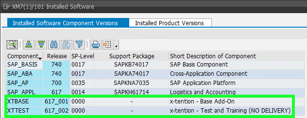

Patience of a SAINT
Why and how to professionalize
ABAP software delivery
about://me
Volker Wegert
Team Lead SAP Healthcare @ x-tention
ABAP development since 2001/2002
Add-on production since 2008
Overview
Scope
missing (intentionally):
- software development guidelines / best practices
- testing and quality assurance
- technical software design
- functional design and product management
focus: software delivery
Usage Scenarios
classic software product development:
- extensible standard software
- develop locally, deploy globally
- little to no knowledge about customer systems
internal development:
- multiple independent system sub-landscapes
- consolidation not feasible
- deployment of standardized solutions required
Product Development Expectations
- paying customers
- consolidated solution
- low-risk installation
- seamless integration
- vendor-based support and maintenance
- limiting variations
- customer-agnostic delivery
Distributed Development Challenges
- security considerations
- maintenance and responsibility
- vendor reputation
- financial impact
No judgement - always consider intended use case!
Poll
Who among you...
- ...should be using add-on based delivery?
- ...is already producing add-ons?
- ...is a customer / recipient?
- ...🍕?
Add-On Delivery Process
Development and Preparation
▼
Composition
▼
Assembly and Test
▼
Installation
Development and Preparation
Development System
- regular ABAP development
- some restrictions apply
Delivery System
- identify missing objects
- frequently erratic settings
- stable testing environment
Software Delivery Composer
- Object Collection, Checks
- Result: Installation / Upgrade or Support Package files
Software Delivery Assembler
- PAT installation files
- SAR archive for distribution
Installation
Alternative Approaches
Candidates
abapGit
(also applies to SAPlink, ...)
- highly automated copy & paste
- great tool for certain applications
- wrong tool for this task
- no special system access
- just another local editing tool
- rules and restrictions apply
Namespaces
- freely available
- local governance required
- no protection against collisions
- enforce ownership
- global protection enforced
- distributed object editing prohibited
🔥 No delivery into protected namespaces
Change and Transport System (CTS)
Records changes to objects in a system and applies these changes to a target system.
⤷ diff / patch
Records changed objects in a system and transfers the changed objects to a target system.
⤷ flag / copy
CTS Design Considerations
- Goal: Customer System Landscape Consistency
- All systems known by unique SID
- Consistent release/patch levels
- Local source system for every customer object
- Local governance of development
1d33664: Instant Death
Challenge
Producer
- Source System DEV
- Transport DEVK912345
- Files K912345.DEV and R912345.DEV
Customer
- Three-system landscape
- DEV ▶ TST ▶ PRD
Solution
Software Component
- SAPK-101COINXYABC
- registered namespace /XYABC/ required
-
included in standard display:
Modifications
Challenge
- Disencouraged, but necessary (emergency corrections)
- Possible with consumer key
- CTS support limited: protection against overwriting modified objects accidentally
Solution
Full SPDD and SPAU support, including "Modifikationsabgleichstransporte"
(Sorry, no screenshots - our systems are clean...)
Dependencies and Ordering
Challenge
- no information about dependencies
- no enforcement of import order
- consistency across system landscape not guaranteed
- very time-consuming to debug and fix
- applies to both upgrades and component dependencies
Solution
- Specifications of dependencies in package attributes
- Order of support packages enforded automatically
- Mandatory check before installation
Removing Stuff
Challenges
Individual objects:
- deletion supported
- once only (w/o hacks)
- even more import ordering issues
Entire software:
- no deletion from original system
- theoretically possible with separate system
- huge manual effort, very error-prone
🧟 Beware of zombies!
🔥 No proven solution.
Solution
Individual objects:
- SDC: include or ignore
- decision required
- Package attributes: prevent skipping of deletion
Entire software:
-
Deinstallable Add-Ons

- customization of deletion process
Non-Technical Aspects
ABAP Add-On Deployment Certification
- Permission and requirement to use AAK
- Verification of compatibility and compliance by SAP
- Result: certified solution
- Proof of dedication and competence
Implementation
Costs
Direct Costs
Infrastructure: Basics
Infrastructure: Target Releases
Infrastructure: Maintenance Strategy
Infrastructure: Cont'd
Summary and Outlook
Summary
- Process Overview
- Challenges and Solutions
- Benefits to Provider and Customer
- Requirements and Costs
Outlook
- Applications in cloud-based scenarios?
-
DSAG Webinar:

Thank you.
 @vwegert
@vwegert
https://volker-wegert.de